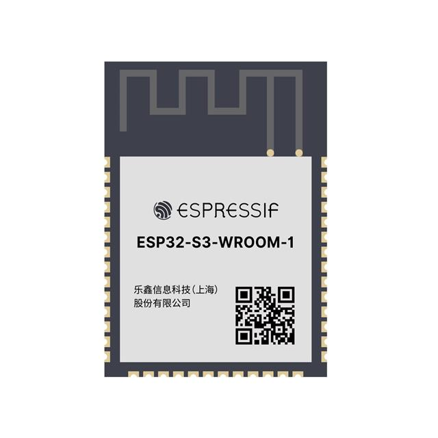
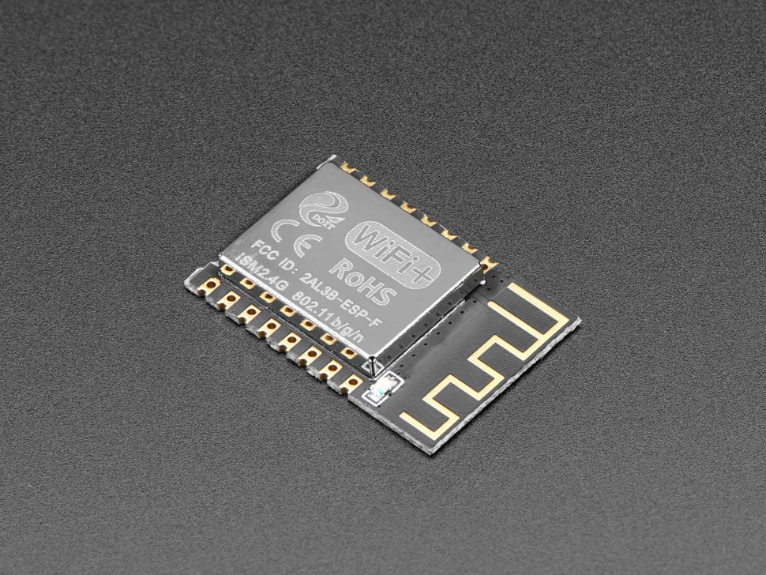
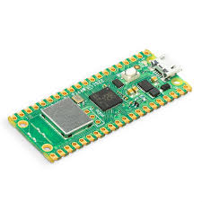
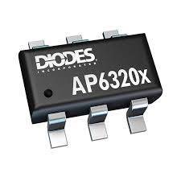
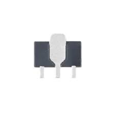
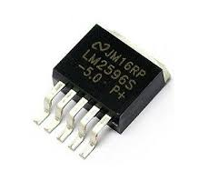
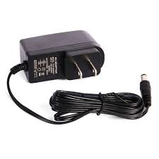

Subsystem Documentation: Wi-Fi-Enabled Data Collection and Transmission
Introduction
As part of our embedded systems design project, my subsystem is responsible for collecting data from all sensors in the system, transmitting it via a Wi-Fi network created by the ESP32 microcontroller, and updating this data in real-time on a GitHub-hosted webpage. This document outlines the selection of components for my subsystem, focusing on efficient power regulation, reliable wireless communication, and seamless integration with sensors.
Final Major Component Summary
| Component Name | Role | Final Part Number / ID | Justification |
|---|---|---|---|
| ESP32-S3-WROOM-1-N4 | Wi-Fi-enabled microcontroller | ESP32-S3-WROOM-1-N4 | Best balance of Wi-Fi support, power, GPIO |
| AP63203WU-7 | 3.3V Switching Voltage Regulator | AP63203WU-7 | High-efficiency regulator for 9V–3.3V |
| DC Barrel Jack Adapter | Power input interface | PRT-10811 | Reliable power input from wall adapter |
Major Component Selections
Microcontroller Selection
| Option | Pros | Cons | Unit Cost & Link |
|---|---|---|---|
|  ESP32-S3-WROOM-1-N4 (Final Choice) |
Built-in Wi-Fi/Bluetooth, supports multiple serial protocols, low power modes, 4MB Flash | 3.3V logic may require level shifters for some peripherals | $2.95 DigiKey |
|  ESP8266 |
Low cost, simple to use | Limited GPIO pins, no dual-core processor | $1.60 DigiKey |
|  Raspberry Pi Pico W |
Dual-core processor, Wi-Fi support | Higher power consumption, larger physical size | $6.00 DigiKey |
{kind=link}
{kind=link}
{kind=link}
Final Selection: ESP32-S3-WROOM-1-N4
Rationale: Chosen for its robust Wi-Fi support, multiple GPIOs, dual-core processor, and strong developer ecosystem.
Power Regulation
| Option | Pros | Cons | Unit Cost & Link |
|---|---|---|---|
|  AP63203WU_7 (Final Choice) |
High efficiency, compact size, low quiescent current | Slightly higher cost than linear regulators | $1.38 DigiKey |
|  AMS1117-3.3 |
Simple design | Low efficiency | $0.68 DigiKey |
|  LM2596 |
High efficiency | Larger physical size | $6.70 DigiKey |
{kind=link}
{kind=link}
{kind=link}
Final Selection: AP63203WU_7
Rationale: Offers high efficiency, surface mount compatibility, and ideal size for our compact PCB design.
Power Input
| Option | Pros | Cons | Unit Cost & Link |
|---|---|---|---|
|  DC Barrel Jack Adapter (Final Choice) |
Simple, reliable, provides stable power | Requires external adapter | $1.50 DigiKey |
{kind=link}
Final Selection: DC Barrel Jack Adapter
Rationale: Easy to implement and provides reliable power supply with no need for USB tethering.
Additional Components to Enhance Subsystem
- Capacitors (Decoupling):
- Add 10µF and 0.1µF near ESP32 and regulator to suppress noise.
- Heat Sink (Optional):
- Use with voltage regulator if temperatures rise during sustained load.
- LED Indicators:
- Power LED and Wi-Fi status LED to debug and verify connectivity visually.
Responsibilities
- Data Collection: Collect sensor data over UART using GPIO 43 (TX) and GPIO 44 (RX).
- Wi-Fi Communication: Use the ESP32 Wi-Fi module to transmit sensor data to the MQTT broker.
- Power Management: Convert 9V input to stable 3.3V using AP63203WU_7 regulator.
- Live Data Updates: Send data to GitHub-hosted webpage for real-time visualization.
- System Integration: Communicate with both upstream and downstream subsystems via GPIO 35 and 38.
Updated ESP32 Pinout Table
| Pin | Function | Connected To | Subsystem |
|---|---|---|---|
| GPIO 35 | Digital I/O | Downstream Header | Communication Interface |
| GPIO 38 | Digital I/O | Upstream Header | Communication Interface |
| GPIO 43 | UART TX | Sensor Subsystem | Data Collection |
| GPIO 44 | UART RX | Sensor Subsystem | Data Collection |
| VDD | Power (3.3V) | From Switching Regulator | Power Supply |
| GND | Ground | Common Ground Plane | Power Supply |
Decision-Making Process for Pinout Configuration
The pin mapping was finalized after evaluating GPIO availability, electrical constraints, and subsystem routing complexity. The following guided our process:
- Selecting dedicated UART pins (GPIO 43 and 44) to prevent serial conflicts.
- Ensuring digital I/O pins (GPIO 35, 38) were free from boot or flash limitations.
- Prioritizing clean PCB routing paths for all signal and power lines.
- Testing UART behavior under full sensor load to ensure reliability.
This structure ensures minimal interference and maximum compatibility with sensor data flow and inter-subsystem signaling.
How Design Meets Product Requirements
Our design meets all defined requirements:
- ✅ Wireless Transmission: ESP32’s native Wi-Fi and MQTT support provide real-time updates to GitHub webpage.
- ✅ UART-Based Sensor Collection: Pinout isolates UART pins to prevent conflicts.
- ✅ Reliable Power Supply: Barrel jack and AP63203WU_7 ensure stable and safe 3.3V operation.
- ✅ Modularity: GPIOs connected to upstream/downstream headers simplify integration with other teams’ subsystems.
- ✅ Efficiency and Debuggability: LED indicators and compact switching regulator improve usability and maintainability.
Conclusion
The final component and pin configuration guarantees a robust, modular, and power-efficient Wi-Fi subsystem capable of real-time environmental data collection and wireless display. Careful pin allocation and component selection directly support reliability, integration, and long-term maintainability of the system.